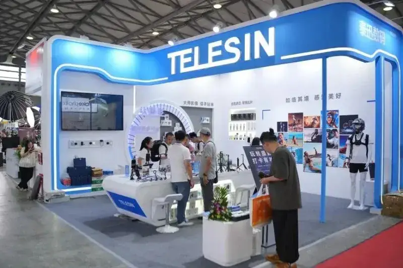
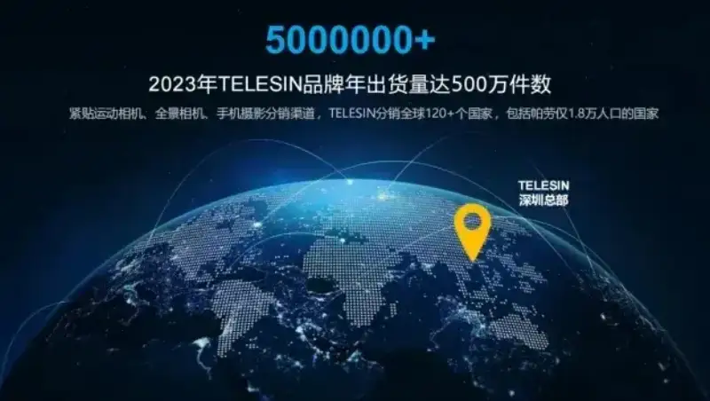
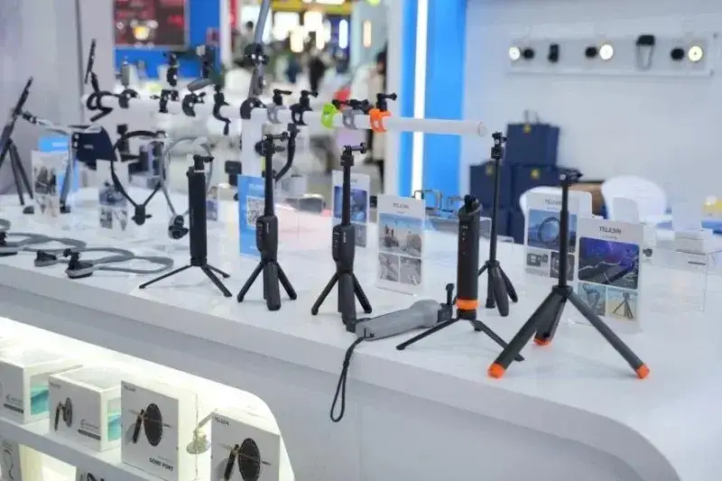
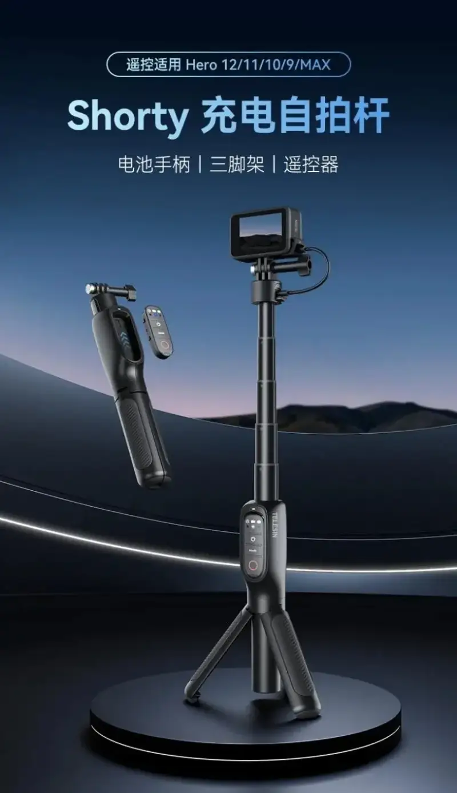
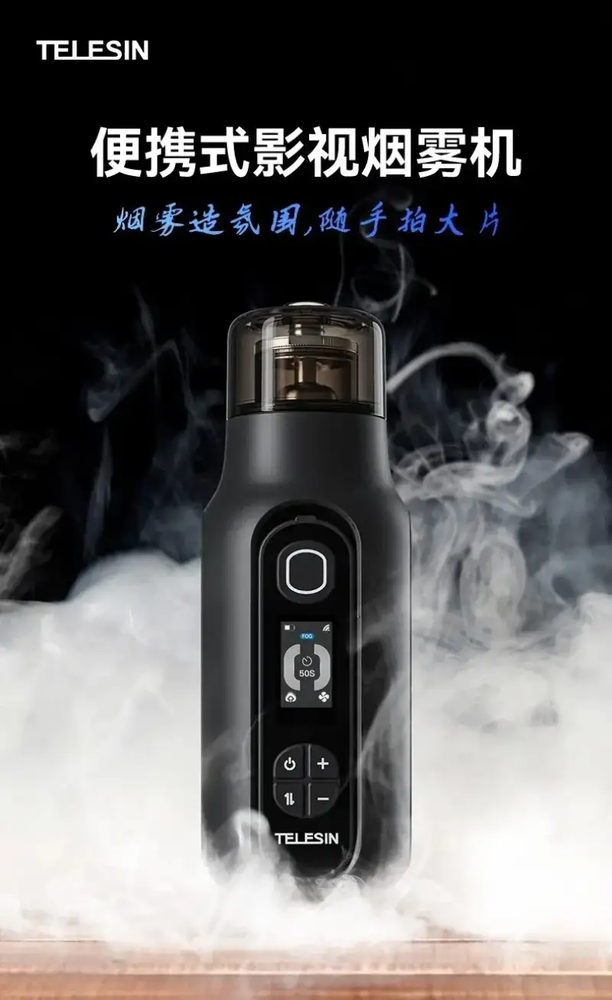
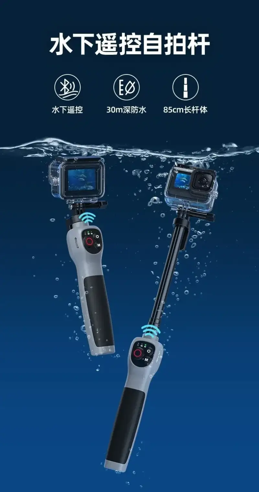
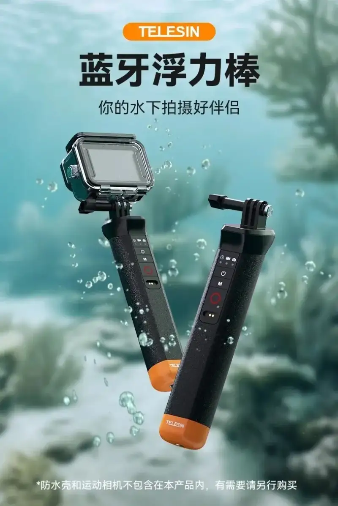
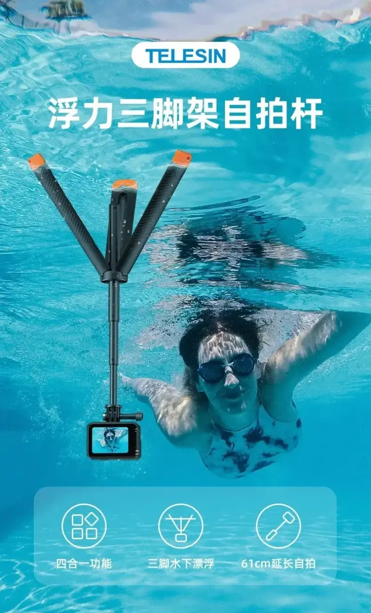
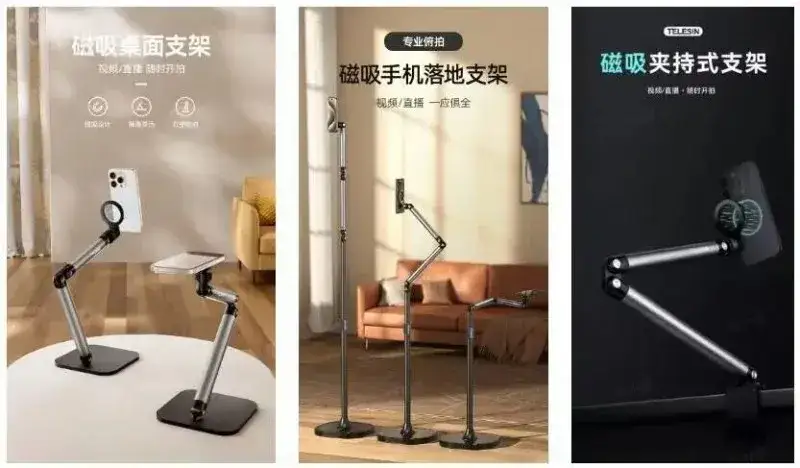

From August 7 to 9, 2024, the 25th International Photographic Equipment and Digital Imaging Exhibition opened in grand style at the Shanghai New International Expo Centre.
With its deep history and wide international reach, this exhibition drew more than 400 leading exhibitors and well-known brands from around the world. Together they showed the latest photographic equipment, digital imaging solutions, and innovative accessories.

TELESIN, a leader in imaging accessories, stood out at this exhibition.
A range of carefully developed products made a full breakthrough in function and design. They give enthusiasts and professionals more convenient, efficient, and professional support for image creation.
A strong brand, a pioneer in innovation
TELESIN was founded in 2013 in Shenzhen, a city of innovation and design. It is a national high-tech enterprise that empowers creative image work, and it earned the 2022 Shenzhen specialized, refined, distinctive, and innovative enterprise title.

TELESIN products have accompanied millions of users worldwide on their creative journeys and have become an essential partner in modern image creation. For ten years, guided by its mission to help every video creator share more great moments, and by a user-first value, the company has helped people record extraordinary moments in the sky and the sea, in brilliant light, skiing high in the mountains, and in speed and excitement.
New products make a striking debut
Our dedicated products mark not only a leap in technical innovation but also a quick response to market trends. Each round of careful research, testing, and development is a deep answer to the full range of needs that image creators have. Below are the major new products TELESIN designed for this show. They will set the new trend in image creation.

The Shorty charging selfie stick has a built-in 5000mAh battery. It gives the camera up to 6 hours of strong power and supports 4K 30fps shooting. It lets you create outdoors without worry and catch every great moment.

The portable film smoke machine uses an innovative split remote for precise control up to 10 meters away. One person can create a professional smoke effect, so shooting is easier and freer.

The underwater Bluetooth selfie stick is the first in the industry to support underwater control. Bluetooth lets you start and stop with ease, solving the problems of underwater shooting. Whether you dive deep or shoot underwater, you can handle it well.

The Bluetooth buoyancy rod is light enough to hold in one hand. With flexible Bluetooth remote control, it makes shooting easy and adds endless fun, so every shoot becomes a feast of creativity and enjoyment.

The buoyancy tripod selfie stick combines four functions: a buoyancy rod, a waterproof telescoping selfie stick, a tripod, and a grip. Its unique independent three-leg design gives you stable, hands-free shooting even underwater, for a clear, smooth frame.

The live-streaming stand series, in desk, floor, and clamp versions, uses an advanced strong magnetic ring for instant snap-on and one-hand operation. With a 360-degree damped swivel, it supports front, side, top-down, and low-angle shots, to meet the varied needs of streaming and creation.

We warmly welcome you to join us
Finally, we warmly invite you to visit TELESIN at booth N2E09 and witness the bright future of imaging technology with us.
Here you will feel the charm of image art and experience the shock and surprise of new technology. Move forward with us, and create more brilliance and wonder in the world of light.